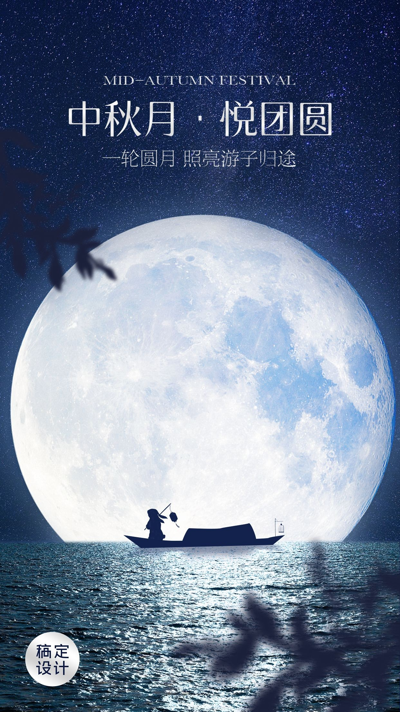
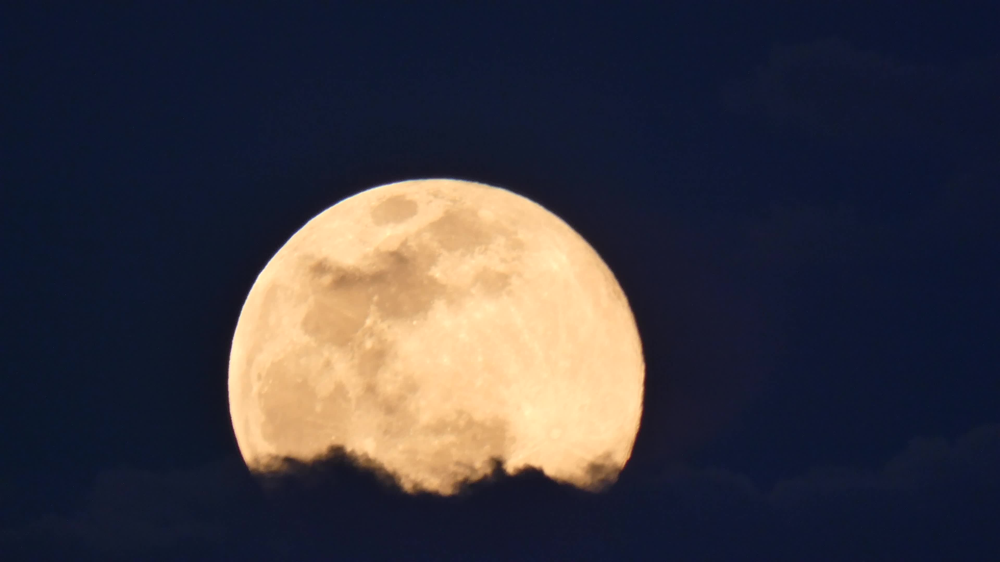
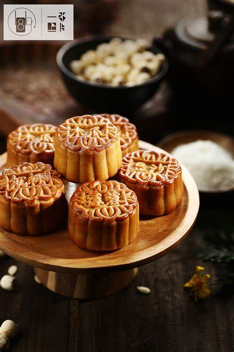
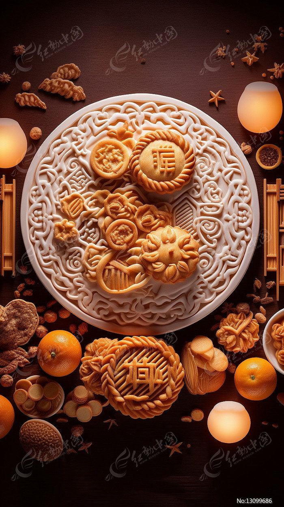

此处返回
中秋节（Mid-Autumn Festival），又称祭月节、月光诞、月亮节、拜月节、月娘节、团圆节、仲秋节、月夕等，是流行于中国众多民族中的传统节日，时间为农历八月十五，因其恰值三秋之半，故得此名，与春节、清明节、端午节并称为中国四大传统节日。
中秋节源自先民对天象的崇拜，由上古时代秋夕祭月演变而来，在发展中融合了天子夕月、秋社、赏月以及月宫的传说等多种风俗事项。中秋节起源于先秦，普及于汉代，定型于唐朝，正式定立于北宋，盛行于宋朝以后。 2008年1月1日，被国务院列为国家法定节假日。 中秋节自古便有祭月、赏月追月、乞月照月、扎灯笼、玩花灯、猜灯谜、树中秋、舞火龙、烧塔、听香、吃月饼、嗦田螺、食甜薯、赏桂花、饮桂花酒等民俗。流传至今，经久不息。
-
吃月饼
先秦起源
中秋节源自天象崇拜，由上古时代秋夕祭月演变而来。祭月，历史久远，是古代我国一些地方民间对“月神”的一种崇拜活动，二十四节气的“秋分”，是古老的“祭月节”。 中秋节在发展中融合了天子夕月、秋社、赏月以及月宫的传说等多种风俗事项，它起源于先秦，最后定型于唐朝。“中秋”一词现存文字记载最早见于汉代文献。《周礼·天官·家宰》云：“司裘：掌为大裘，以共王祀天之服。中秋献良裘，王乃行羽物。”《周礼·春官·宗伯》亦载：“中秋，夜迎寒，亦如之。”《周礼·夏官·司马》又曰：“中秋，教治兵，如振旅之陈。”上述几处所述“中秋”应为农历八月，即秋天的第二个月，亦即“仲秋”，虽与后世之“中秋”定义略有不同，但一则足见先秦时代已有渊源，二则可知“中秋夕月”乃先秦天子祀天之大礼《史记·孝武本纪》裴骃集解引应劭语曰：“天子春朝日，秋夕月，拜日东门外。朝日以朝，夕月以夕。”由于秋分的晚上不一定有月亮，有月亮也不一定圆，于是民间渐渐把秋分祭月放到中秋了。八月中秋正是收获季节，古人要举行祭祀土神的仪式，叫作“秋报”、“秋社”。《白虎通·社稷》载：“仲秋之月，择元日，命民社。《援神契》曰：‘仲春祈谷，仲秋获禾，报社祭稷。’”夕月、秋社，可视为中秋节的渊源。
月饼，又叫月团、丰收饼、宫饼、团圆饼等，是古代中秋祭拜月神的贡品。月饼最初是用来祭奉月神的供品，后来人们逐渐把中秋赏月与品尝月饼，作为家人团圆的一大象征。月饼象征着大团圆，人们把它当作节日食品，用它祭月、赠送亲友。 从历史上看，吃月饼并不是中秋节不可缺少的活动，唐宋时期就没有专门为中秋而制作的月饼可吃。但自明朝出现中秋月饼之后，它就成为中秋习俗的必要组成部分。最初的月饼，起源于唐朝军队
中国传统节日有贵人伦、重亲情的特点，过节以亲人团聚、人丁兴旺为福。其中又有两个节日在强调亲人团聚方面更加突出，一个是春节，一个是中秋节。自唐朝中秋节产生的时代起，就将月圆与人间团圆联系起来。随着时代的变迁，人间团圆的主题越来越突出、重要。这一主题是跟中秋节源于月圆密切相关的，可以看作中秋节的一个特色，而且由于跟明月联系起来而富于诗意。民间如果这天有儿女在外，不能回家团圆，家长和儿女双方都会觉得特别遗憾。现代社会人们与亲人团圆难以如愿时，也多会打回电话或书信问候。过去除了家人团聚，朋友也有聚会赏月、交流诗文等习俗。
从明代开始，就有了中秋节互送月饼、瓜果的活动。现在，这种习俗更加盛行，并演变为没有局限性的，以节日的名义互送礼物。互送礼品是一种美俗，它体现的是人与人之间的互相关心、互相尊重、敬老爱幼等美好心意和优良品德，也是密切人际关系、表达内心情感的重要方式。
民间中秋赏月活动约始魏晋时期，但未成习。中秋赏月风俗正式形成于唐代。 唐代，中秋赏月、玩月颇为盛行，许多诗人的名篇中都有咏月的诗句。唐代欧阳詹在《玩月》诗序中说：“月可玩，玩月，古也。谢赋鲍诗，朓之亭前，亮之楼中，皆玩月也……”《唐逸史》等书中记载的唐明皇中秋之夜游览月宫、观看仙女跳“霓裳羽衣舞”的传说，就是唐朝宫廷中秋玩月习俗的缩影。当时在民间，玩月也很普遍。中秋之夜，为赏玩明月，富者多自搭彩楼，贫者多集于酒楼，好游者或登高于山顶，或泛舟于水上，文人赋诗，艺人说古，饮酒欢歌，唱酬娱乐，往往通宵达旦，极尽玩月之欢。宋代，形成了以赏月活动为中心的中秋民俗节日，正式定为中秋节。南宋吴自牧在《梦粱录》中曾这样描绘当时杭州城中的玩月情景：“王孙公子，富家巨室，莫不登危楼，临轩玩月。或开广榭，玳筵罗列，琴瑟铿锵，酌酒高歌，以卜竟夕之欢。至如铺席之家，亦登小小月台，安排家宴，团圞子女，以酬佳节。虽陋巷贫窭之人，解衣市酒，勉强迎欢，不肯虚度。此夜天街卖买，直至五鼓，玩月游人，婆娑于市，至晓不绝。” 赏月在唐宋时期是中秋节的主要习俗，明清以后此习俗衰退。从古代文献来看，中秋节刚形成的时候，赏月就是文人和市民的事情，农民赏月的活动没见记载。现代，中秋赏月方式多样化，除登高望月、泛舟赏月等传统的赏月姿势外，又诞生了摩天轮赏月、坐飞机赏月、露营赏月、直播赏月等赏月新方式。
过了农历八月十五，兴犹未尽的赏月演为“追月”。所谓“追月”，即是于中秋节次日的晚上，邀约亲朋好友，继续赏月。据清人陈子厚《岭南杂事钞》序云：“粤中好事者，于八月十六夜，集亲朋治酒肴赏月，谓之追月。”


.jpg)